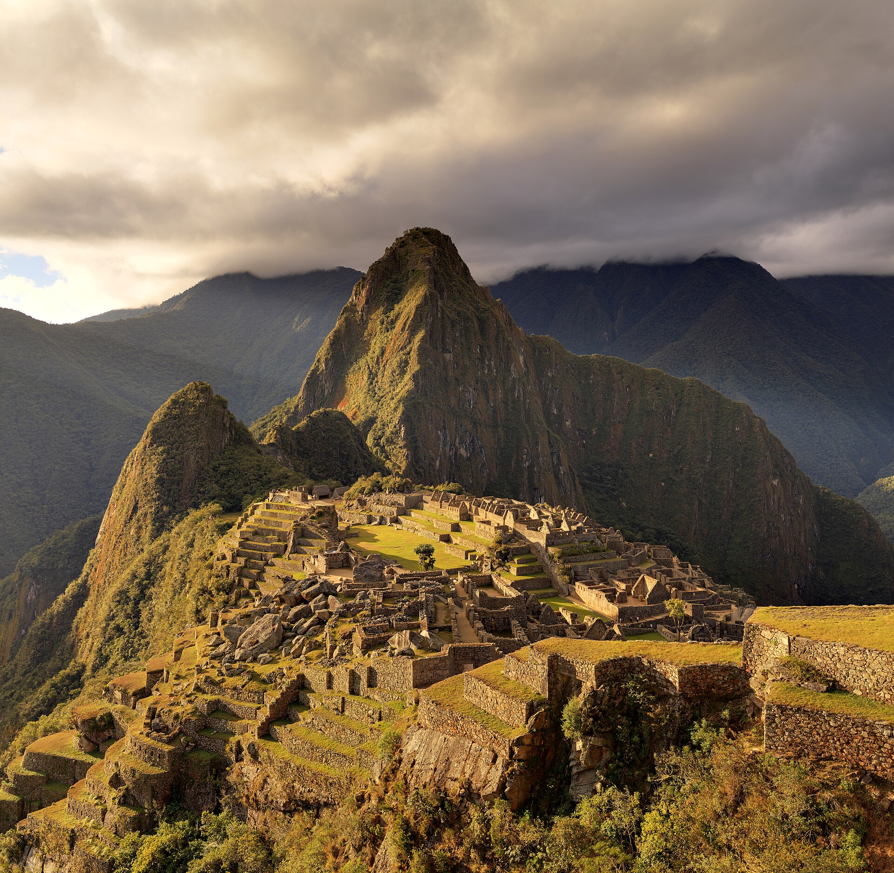
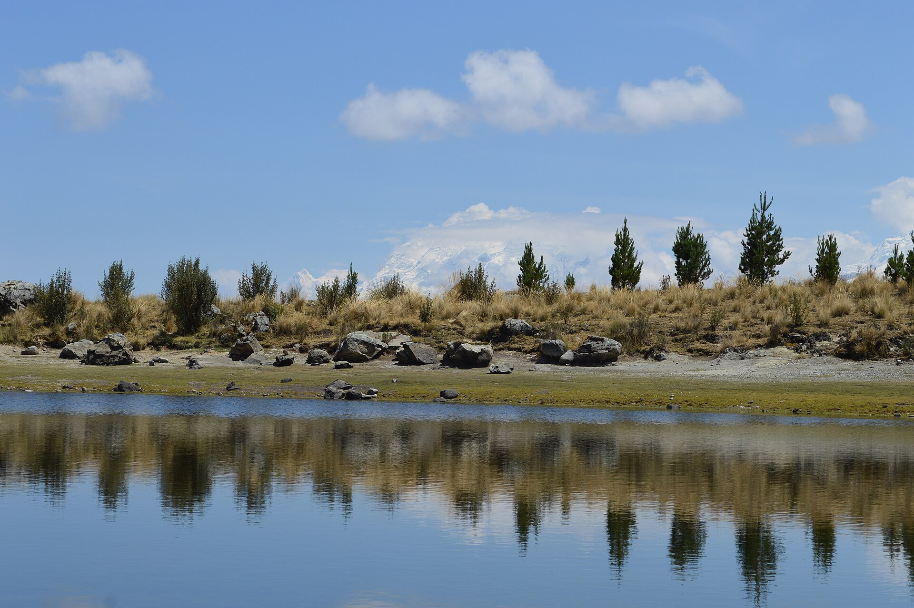
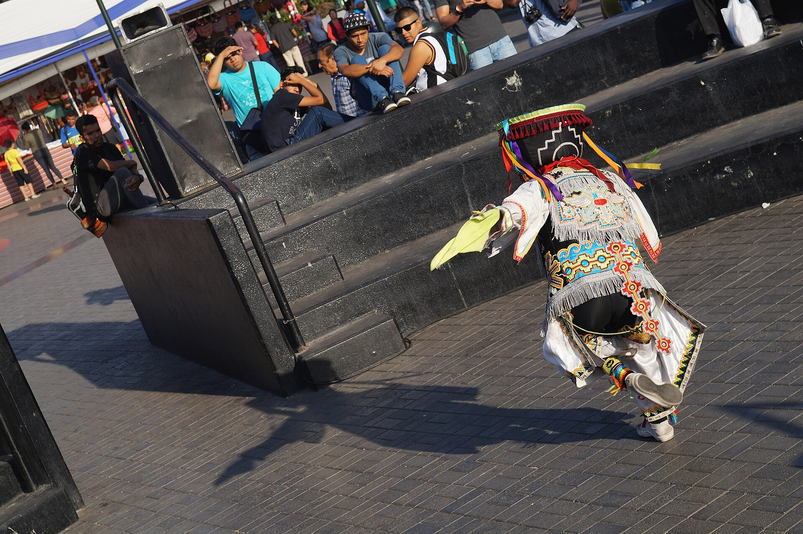
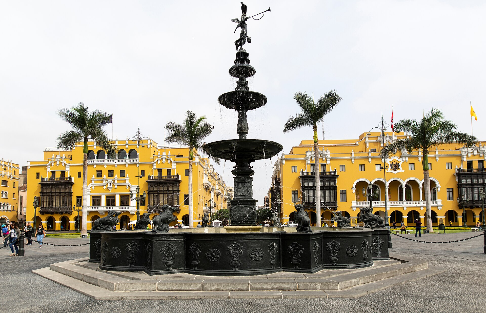

Feira SESI Multicultural 2026
PERU
Diversidade cultural, saúde e desigualdades entre as regiões
Entre os Andes e a Amazônia, uma sociedade marcada por riqueza cultural, diversidade e desafios sociais.
América do Sul / Cultura, território e qualidade de vida
Cinco caminhos. Um país.
Descubra o Peru
Como as desigualdades sociais influenciam o acesso à saúde, à alimentação, à qualidade de vida e às práticas culturais?

Conheça o Peru
Da Costa à Amazônia, um território de muitas identidades.
01 / Território
Sabores dos Andes
Quinoa, milho roxo e maca: tradição que também alimenta.
02 / Alimentação
Saúde e desigualdades
O caminho até um direito nem sempre é o mesmo.
03 / Sociedade
Cultura em movimento
Línguas, tecidos, música e a Dança das Tesouras.
04 / Identidade
Quiz interativo
Sete perguntas para conectar suas descobertas.
05 / Seu desafio